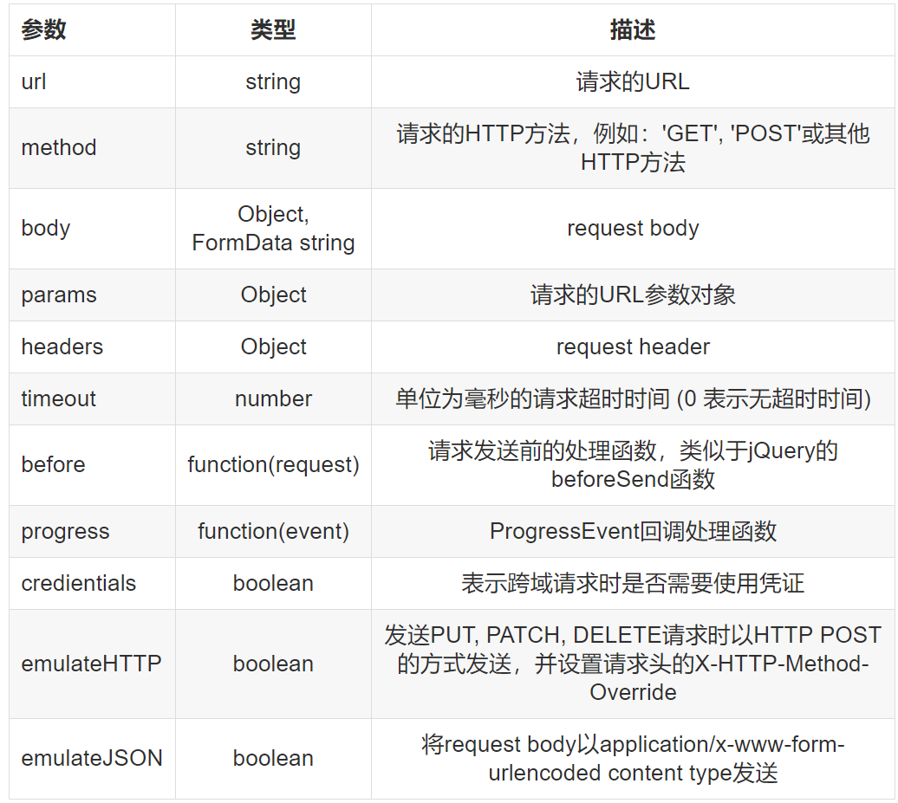

一、Vue实现数据交互的方式：
1、Vue除了vue-resource之外，还可以使用‘axios’的第三方包实现数据的请求；
2、常见的数据请求类型有：
get、post、jsonp
3、JSONP的实现原理：
由于浏览器的安全性限制，不允许AJAX访问，协议不同、域名不同、端口号不同的数据接口，浏览器认为这种访问不安全；
可以通过动态创建script标签的形式，把script标签的src属性，指向数据接口的地址，因为script标签不存在跨域限制，这种数据获取方式，称为JSONP（注意：根据JSONP的实现原理，知晓，JSONP只支持Get请求）；
具体实现过程：
①、先在客户端定义一个回调方法，预定义对数据的操作；
②、再把这个回调方法的名称，通过URL传参的形式，提交到服务器的数据接口；
③、服务器数据接口组织好要发送给客户端的数据，再拿着客户端传递过来的回调方法名称，拼接出一个调用这个方法的字符串，发送给客户端去解析执行；
④、客户端拿到服务器返回的字符串之后，当做Script脚本去解析执行，这样就能够拿到JSONP的数据了。
4、具体的三种方式的使用方法如下图：
5、发送请求时的options选项对象包含以下属性：

6、具体使用时需要先导入vue.js然后再导入vue.resource!
<script src="https://cdn.staticfile.org/vue-resource/1.5.1/vue-resource.min.js"></script><!DOCTYPE html>
<html lang="en">
<head>
<meta charset="UTF-8" />
<meta name="viewport" content="width=device-width, initial-scale=1.0" />
<meta http-equiv="X-UA-Compatible" content="ie=edge" />
<title>vue-resource</title>
<script src="./lib/vue.js"></script>
<script src="./lib/vue-resource.js"></script>
</head>
<body>
<div id="app">
<input type="button" value="get请求" @click="getInfo" />
<input type="button" value="post请求" @click="postInfo" />
<input type="button" value="jsonp请求" @click="jsonpInfo" />
</div>
<script>
var vm = new Vue({
el: "#app ",
data: {},
methods: {
getInfo() {
//发起get请求
//当发起get请求之后，通过.then 来设置成功的回调函数
this.$http.get("请求的地址").then(function(result) {
//通过 result.body 拿到服务器返回的成功的数据
console.log(result.body);
});
}
},
postInfo() {
//发起post请求 application/x-wwww-form-urlencoded
//手动发起的 post请求，默认没有表单格式，所以，有的服务器处理不了
//通过POST方法的第三个参数，{ emulateJSON: true} 设置提交的内容类型 为普通表单数据类型
this.$http.post("地址", {}, { emulateJSON: true }).then(result => {
console.log(result.body);
});
},
jsonpInfo() {
//发起jsonp请求
this.$http.jsonp("地址").then(result => {
console.log(result.body);
});
}
});
</script>
</body>
</html>